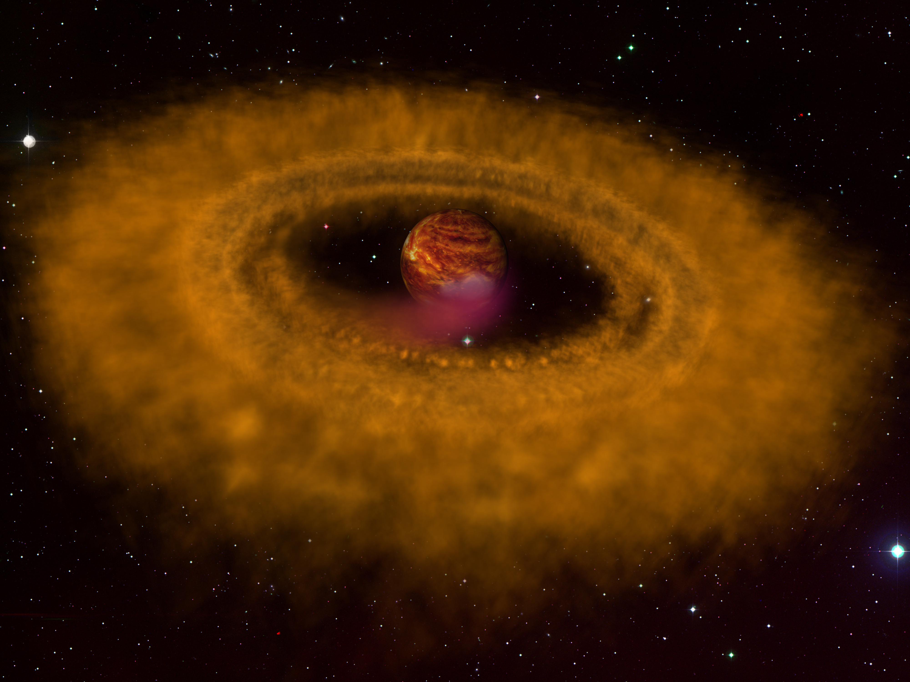
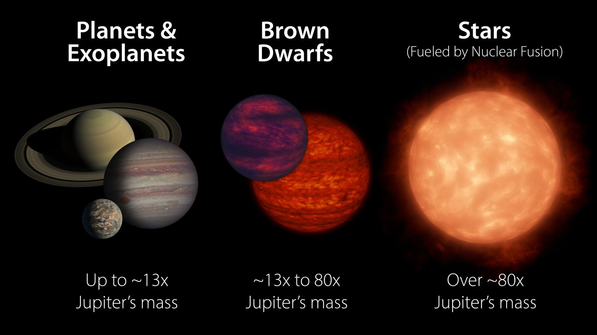

Well, they can form in many—many—different ways, but to simplify things, I'll share the most common way they form, and it's very similar to how stars, and even our Sun, form.
When a gas cloud gets dense and large enough, it will collapse in on itself and slowly form a brand-new celestial object. What is that celestial object? It's… complicated, so I'll get to it in a second. As the dust and gas combine, that new celestial object gets larger, hotter, and denser. All of this keeps happening, and then the object will reach a pivotal moment where everything now depends on one thing: whether its core can get hot enough to ignite hydrogen fusion. If it can, awesome; it's officially a star. But wait, it didn't get hot enough. So now what? Well, you have a brown dwarf. Brown dwarfs are essentially failed stars and now float around in the universe doing, essentially, nothing.

Brown dwarfs are weird. When they were discovered, scientists didn't know what to name them because they weren't anything they had seen before. They weren't planets, and they weren't stars; they were right in between. They were caught in an awkward middle ground—too massive to be a planet, but not massive enough to become a true star. In other words, they didn't really fit anywhere. As a matter of fact, you could create a brown dwarf out of Jupiter, the largest planet in the solar system, by flooding it with billions and trillions of times more matter and stopping right before it becomes a star. At that exact point, Jupiter would lose its planetary status but wouldn't gain star status. It would get the awkward cousin: a brown dwarf.

Short answer: no. Long answer: absolutely not. So what color are they? They are deep red, orange, magenta, or even a purplish-pink to the human eye. But, as you can tell, they aren't called purplish-pink dwarfs. Originally, scientists wanted to call them black dwarfs. This was because they are essentially black stars due to the fact that the light they emit is mostly in the infrared. Without an infrared camera, they are so dim that they appear black. There's a problem, though… the name black dwarf is already taken, so… brown it is!
As we contemplate the naming of brown dwarfs, stay curious and stellar.